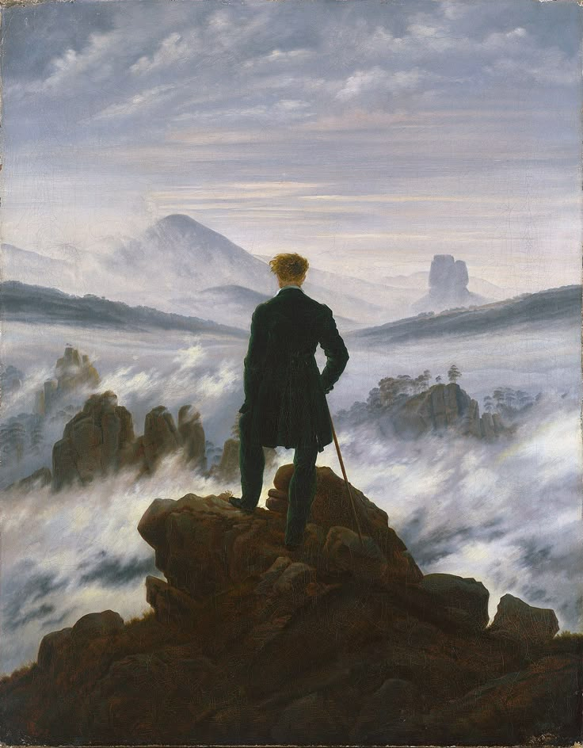

REFLEXIÓN Nº 01 · SOCIEDAD
¿Somos realmente libres dentro de la sociedad?
Crecemos rodeados de normas, expectativas y costumbres que influyen en nuestras decisiones. Pero ¿hasta qué punto elegimos nuestro propio camino?
Leer reflexión ↗